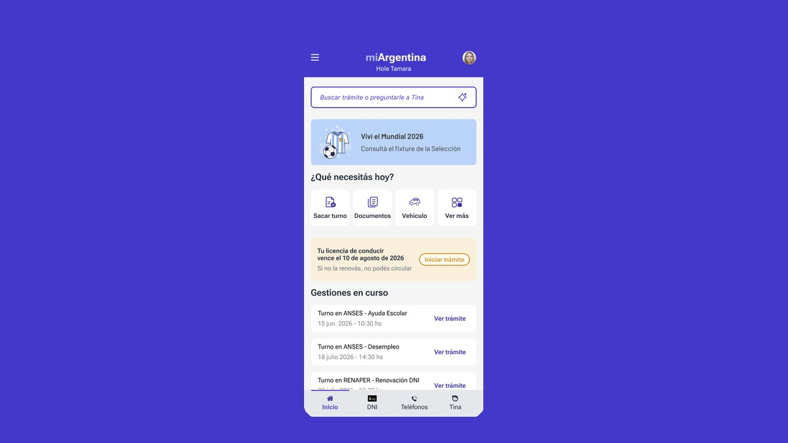

UX/UI Designer & Product Designer
Vanesa Reche
Designing intuitive, scalable products for SaaS and cloud platforms. Specialized in broadcast & media. 5+ years in UX/UI, 15+ years in design.
View work ↓Selected Work
Case Studies

Product-Led Growth — Viz Flowics
Led research that uncovered a 1.05% conversion rate and major friction in the trial funnel. Designed a self-serve growth system — onboarding, public pricing, feature gating — from research to shipped product, resulting in a 30% increase in qualified leads.

Data Augmentation — Editing System
Designed a scalable system for editing large datasets via Google Sheets integration, replacing an error-prone, non-scalable workflow. Defined the core flow, edge cases, and an audit/validation layer — enabling reliable bulk operations at scale.

Custom Fonts — Self-Serve Typography
Replaced a manual, support-dependent process for adding custom fonts with a self-serve upload and management system — removing an operational bottleneck and extending the product's self-serve strategy.

Mi Argentina — App Redesign
Academic redesign of Argentina's national government app for my UX/UI Diploma at UTN. Led the AI assistant flow and the appointment booking system within a 3-person team, from research to interactive prototype.
Design System — 250+ Components. Contributed to the evolution and scalability of Viz Flowics' design system, ensuring visual and functional consistency across products and teams.
Accessibility — Editor Improvements. Led a full accessibility review of the Graphics Editor's color contrast system, defining WCAG-aligned improvements with transversal impact across the design system.
About
Design is translation —
from complex to clear.
I'm a UX/UI and Product Designer based in Buenos Aires, Argentina. I specialize in SaaS products and cloud platforms, with deep experience in the broadcast and media industry through my work at Vizrt (Viz Flowics).
"I focus on designing systems, not screens."
My background spans 15 years in design — 10 in graphic design and 5 focused on UX/UI. That foundation gives me a strong visual eye and brand sensibility that complements my user research and systems thinking.
I work end-to-end: from research and strategy to high-fidelity UI and design system contributions. I've led projects across product-led growth, onboarding, accessibility, and complex data workflows — always collaborating closely with PMs, engineers, and stakeholders in international agile teams.
I hold a Diploma in UX/UI Design from UTN (Universidad Tecnológica Nacional), where I strengthened my foundations in user research methods, interaction design, and design systems — pairing that formal training with 15 years of hands-on industry experience.
I'm also active in the design community — recently attending ConfOps LATAM 2025 (Design Ops) and CLAU 2024 (accessibility & inclusive design).
How I Work
My process blends research, product strategy, and systems thinking — moving from a broad, ambiguous problem to a scoped, scalable solution.
01
UX Research
I start by understanding the real problem — through user interviews, data analysis, and identifying friction points before jumping into solutions.
02
Product Thinking
I align every design decision with business goals and technical constraints, scoping work around real use cases instead of assumptions.
03
System Design
I design scalable systems, not one-off screens — defining flows, states, and edge cases so the solution holds up as the product grows.
design
components
PLG initiative
Skills
Languages
First language, full professional proficiency
Upper intermediate — reading, writing & spoken communication
Contact
Let's work
together
Open to full-time remote roles, freelance projects, and collaborations. Based in Buenos Aires — available worldwide.